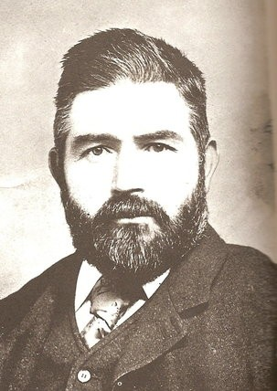
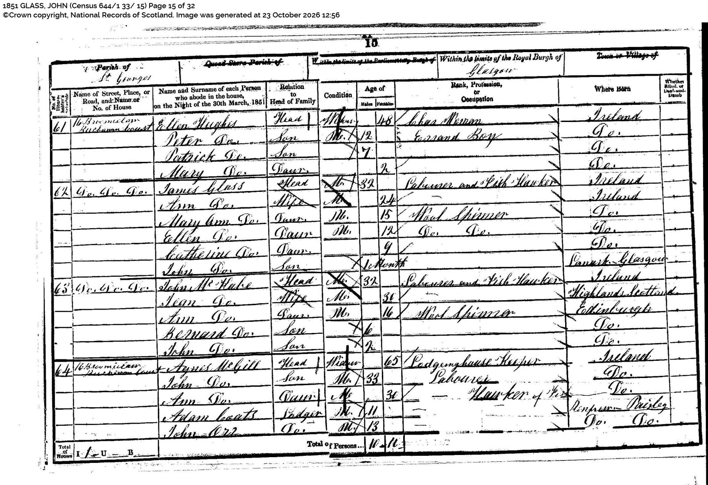

John Glass (1851–1906), one of Celtic Football Club’s founding members. Photographer unknown. Public domain, via Wikimedia Commons.
A name I had always known
I had always known that my Dad’s Great Uncle John Glass played an important part in Celtic Football Club’s history. What I hadn’t appreciated was how highly regarded he was, or how closely his story was woven into our family’s Irish Catholic roots in Glasgow. Discovering those connections has given me a much fuller understanding of the world from which our family came.
16 Broomielaw: the family connection
The 1851 census records the Glass family at 16 Broomielaw, Buchanan Court, Glasgow. James and Ann Glass were living there with their children, including nine-year-old Catherine and her baby brother John, aged just one month.
Catherine would become the mother of my great-grandmother, whom we knew as Maw. John would become one of the leading figures in Celtic’s early history. Yet on that census page they are simply brother and sister, sharing a home beside the River Clyde.
The address connects more than one generation. Maw also grew up at 16 Broomielaw, and her father died there. The discovery made an address on an old document into a place of real significance in our family story.
The Clyde was central to Glasgow’s working life and its connections with the wider world. I wish I had appreciated more of that history as a child. I value knowing it now, and being able to pass these connections on to my children and grandchildren.


The Glass household at 16 Broomielaw, Glasgow, in the 1851 census, including John Glass, aged one month. National Records of Scotland, 1851 census, reference 644/1 33/15, p. 15. © Crown copyright. Image via ScotlandsPeople.
Select the image to enlarge it.
Work, community and family
John worked as a glazier. A contemporary profile published in 1892 describes his early work as a foreman glazier and his later role as general manager in his brother Peter’s wood-merchant and building business. It also describes his involvement in St Mary’s Roman Catholic Temperance Society – a reminder that his public life extended well beyond football.
John married Agnes McKinley in 1868. Following Agnes’s death, he married Bridget McGreavy in Glasgow in November 1884. Their marriage registration describes John as a widower and glazier. Behind the familiar public figure was a man whose life was shaped by work, marriage, children and the responsibilities of home.
Helping Celtic take root
Celtic Football Club was founded in 1887, growing out of charitable activity within Glasgow’s Irish Catholic community. Brother Walfrid’s vision is central to the club’s beginnings, and John Glass became a key organiser in turning that vision into an enduring institution.
Historical accounts credit John with practical leadership, contacts and persistence in Celtic’s formative years. Willie Maley later paid him an extraordinary tribute, describing him as a man to whom the club owed its existence. The 1892 contemporary profile gives a particularly lively account of John’s early efforts to bring people together through football.
The more I read, the more I understood why his name had survived in our family. The story I had grown up knowing was only part of a much larger one.
A glimpse of life in the Gallowgate
An undated newspaper cutting headed “Burglary in the East End” reports a break-in at John’s home at 597 Gallowgate. Among the missing items were watches and football trophies, including a silver cup won by Celtic Reserves. John was away with the team in Paisley, and the report says his son discovered the disturbance.
It is a small, unexpected glimpse of the family household behind the football headlines – and one of those discoveries that makes a person from the past feel suddenly close.
Remembering Uncle John
John Glass died on 2 June 1906 and is buried at Dalbeth Cemetery in Glasgow. His gravestone, marked by a Celtic cross, commemorates him with Bridget McGreavy and other members of the family.
Dalbeth has a deeper significance for me: my great-grandmother, my grandparents and my father are all buried there.
Uncle John’s contribution to Celtic is still remembered. For me, the discovery of his wider story – from the census at 16 Broomielaw to the club he helped establish – has made our family history richer and more complete. These are roots I am glad to know, and glad to share.